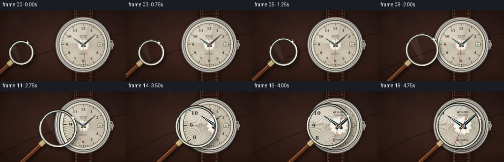
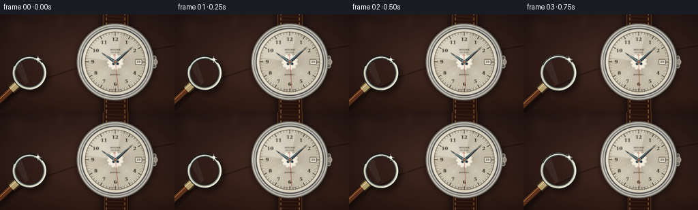
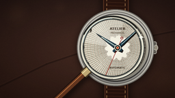
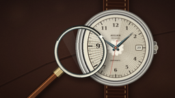
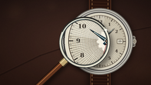

CODING AGENTS AS PIXEL WORLD MODELS
traex/GPT-5.6-Sol · phygen_067
点击播放 · 原生 RGB 像素
逐轮保存的候选
回放视频、检查图与代码变化。
每份候选均可单独播放。实际图片检查记录在下方工具轨迹中。
候选 01播放与检查图
点击播放 · 原生 RGB 像素


展开代码变化
--- 上一保存版本
+++ 本次保存版本
@@ -0,0 +1,282 @@
+from pathlib import Path
+import math
+import numpy as np
+from PIL import Image, ImageDraw, ImageFont, ImageFilter, ImageEnhance
+import artifact_io
+
+CASE_DIR = Path(__file__).resolve().parent
+W, H, N = 256, 144, 20
+S = 4
+SW, SH = W*S, H*S
+rng = np.random.default_rng(6701)
+
+SERIF = "/usr/share/fonts/truetype/dejavu/DejaVuSerif.ttf"
+SERIF_BOLD = "/usr/share/fonts/truetype/dejavu/DejaVuSerif-Bold.ttf"
+SANS = "/usr/share/fonts/truetype/dejavu/DejaVuSans.ttf"
+SANS_BOLD = "/usr/share/fonts/truetype/dejavu/DejaVuSans-Bold.ttf"
+
+def font(path, size):
+ return ImageFont.truetype(path, max(1, int(size*S)))
+
+def box(b):
+ return tuple(int(round(v*S)) for v in b)
+
+def pt(p):
+ return tuple(int(round(v*S)) for v in p)
+
+def line(draw, xy, fill, width=1, joint="curve"):
+ draw.line([pt(p) for p in xy], fill=fill, width=max(1, int(round(width*S))), joint=joint)
+
+def ellipse(draw, b, fill=None, outline=None, width=1):
+ draw.ellipse(box(b), fill=fill, outline=outline, width=max(1, int(round(width*S))))
+
+def rounded(draw, b, radius, fill=None, outline=None, width=1):
+ draw.rounded_rectangle(box(b), radius=int(radius*S), fill=fill, outline=outline,
+ width=max(1, int(round(width*S))))
+
+# Warm, tactile macro-photography background (dark walnut and leather tones).
+yy, xx = np.mgrid[0:SH, 0:SW]
+base = np.empty((SH, SW, 3), dtype=np.float32)
+rad = np.sqrt(((xx/S-135)/180)**2 + ((yy/S-65)/105)**2)
+light = np.clip(1.0-rad, 0, 1)
+base[...,0] = 35 + 29*light + 8*(yy/SH)
+base[...,1] = 21 + 20*light + 3*(yy/SH)
+base[...,2] = 18 + 16*light
+# Fine fixed film/leather grain.
+noise = rng.normal(0, 3.2, (SH, SW))
+coarse_small = Image.fromarray(rng.integers(0, 256, (36,64), dtype=np.uint8)).resize((SW,SH), Image.Resampling.BICUBIC).filter(ImageFilter.GaussianBlur(13*S))
+coarse = (np.asarray(coarse_small, dtype=np.float32)-128)/16
+for c, fac in enumerate((1.0,.72,.60)):
+ base[...,c] += noise*fac + coarse*fac
+base = np.clip(base,0,255).astype(np.uint8)
+BACKGROUND = Image.fromarray(base, 'RGB')
+bgd = ImageDraw.Draw(BACKGROUND, 'RGBA')
+# Recessed seam and wood/leather pores.
+line(bgd, [(-10,132),(68,94),(145,68),(274,42)], (15,8,7,95), 2.2)
+line(bgd, [(-10,130),(68,92),(145,66),(274,40)], (120,74,52,35), .75)
+for i in range(65):
+ x = float(rng.uniform(-10,266)); y = float(rng.uniform(0,144))
+ length = float(rng.uniform(2,13))
+ color = (18,10,8,int(rng.integers(5,17))) if i%2 else (150,95,62,int(rng.integers(3,11)))
+ line(bgd, [(x,y),(x+length,y+rng.uniform(-.8,.8))], color, rng.uniform(.2,.55))
+# Defocused warm highlights far behind.
+for x,y,r,a in [(25,20,17,18),(88,11,9,11),(238,119,21,12)]:
+ glow=Image.new('RGBA',(SW,SH),(0,0,0,0)); gd=ImageDraw.Draw(glow,'RGBA')
+ ellipse(gd,(x-r,y-r,x+r,y+r),(245,174,102,a))
+ glow=glow.filter(ImageFilter.GaussianBlur(r*S*.55)); BACKGROUND=Image.alpha_composite(BACKGROUND.convert('RGBA'),glow).convert('RGB')
+
+CX, CY = 169.0, 70.0
+
+def radial_ring(img, center, radii, colors):
+ d = ImageDraw.Draw(img, 'RGBA')
+ for r, c in zip(radii, colors):
+ ellipse(d, (center[0]-r,center[1]-r,center[0]+r,center[1]+r), c)
+
+def hand_polygon(cx,cy,ang_deg,length,back,width,tip_extra=0):
+ a=math.radians(ang_deg); ux,uy=math.sin(a),-math.cos(a); px,py=-uy,ux
+ tip=(cx+ux*(length+tip_extra), cy+uy*(length+tip_extra))
+ rear=(cx-ux*back,cy-uy*back)
+ return [pt((rear[0]+px*width*.55,rear[1]+py*width*.55)),
+ pt((cx+px*width,cy+py*width)),
+ pt(tip),pt((cx-px*width,cy-py*width)),
+ pt((rear[0]-px*width*.55,rear[1]-py*width*.55))]
+
+def make_watch(frame_index):
+ img = BACKGROUND.copy().convert('RGBA')
+ # Soft cast shadow beneath watch and strap.
+ sh = Image.new('RGBA',(SW,SH),(0,0,0,0)); sd=ImageDraw.Draw(sh,'RGBA')
+ rounded(sd,(148, -18,191,162),8,(0,0,0,125))
+ ellipse(sd,(113,16,227,127),(0,0,0,165))
+ sh=sh.filter(ImageFilter.GaussianBlur(5*S)); img=Image.alpha_composite(img,sh)
+ d=ImageDraw.Draw(img,'RGBA')
+ # Leather strap, mostly visible above and below the case.
+ rounded(d,(151,-18,188,47),6,(44,22,15,255),(112,64,42,220),1)
+ rounded(d,(153,97,187,163),6,(40,19,13,255),(105,59,39,220),1)
+ # Strap grain and stitching.
+ for y in range(-12,43,5):
+ line(d,[(155,y),(184,y+1)],(128,76,50,30),.55)
+ for y in range(101,160,5):
+ line(d,[(157,y),(183,y+.8)],(130,74,47,28),.55)
+ for x in (156,183):
+ for y in list(range(-9,43,7))+list(range(105,160,7)):
+ line(d,[(x,y),(x,y+3.5)],(225,169,106,145),.8)
+ # Polished lugs.
+ for b in [(142,25,158,45),(181,25,196,45),(143,95,159,113),(180,95,195,113)]:
+ rounded(d,b,3,(120,115,106,255),(229,225,211,210),1)
+ # Crown with fluting, on the right.
+ rounded(d,(219,61,229,79),2.5,(111,105,95,255),(232,229,216,230),.8)
+ for y in np.linspace(63,77,6): line(d,[(222,y),(228,y)],(48,45,41,170),.7)
+ ellipse(d,(225,66,231,74),(155,146,129,255),(235,230,214,220),.8)
+ # Case body, built from concentric metal gradients.
+ radii=np.linspace(56.5,49.5,15)
+ cols=[]
+ for i,r in enumerate(radii):
+ v=int(104+105*(i/14)+35*math.sin(i*.68))
+ cols.append((max(80,min(238,v)),max(78,min(232,v-3)),max(74,min(219,v-10)),255))
+ radial_ring(img,(CX,CY),radii,cols)
+ d=ImageDraw.Draw(img,'RGBA')
+ ellipse(d,(CX-54.5,CY-54.5,CX+54.5,CY+54.5),None,(249,245,231,180),1)
+ ellipse(d,(CX-50,CY-50,CX+50,CY+50),None,(54,51,47,230),1.4)
+ # Ivory dial with gentle radial shading.
+ for i,r in enumerate(np.linspace(47.8,1,85)):
+ k=i/84
+ col=(232+int(16*k),225+int(18*k),204+int(25*k),255)
+ ellipse(d,(CX-r,CY-r,CX+r,CY+r),col)
+ # Guilloche: concentric engraved micro-rings and radial engine turning.
+ for r in np.arange(12,44,.92):
+ shade=150+int(22*math.sin(r*2.8))
+ ellipse(d,(CX-r,CY-r,CX+r,CY+r),None,(shade,137,111,25),.28)
+ for j in range(96):
+ a=2*math.pi*j/96
+ r0=11.2 + 1.4*math.sin(j*.73)
+ r1=43.2
+ line(d,[(CX+math.sin(a)*r0,CY-math.cos(a)*r0),
+ (CX+math.sin(a)*r1,CY-math.cos(a)*r1)],(105,89,68,18),.25)
+ # Chapter ring and minute hashes.
+ ellipse(d,(CX-44.2,CY-44.2,CX+44.2,CY+44.2),None,(69,57,44,190),.65)
+ for j in range(60):
+ a=2*math.pi*j/60; major=(j%5==0)
+ ro=43.4; ri=39.0 if major else 41.0
+ color=(38,31,25,235 if major else 160)
+ line(d,[(CX+math.sin(a)*ri,CY-math.cos(a)*ri),
+ (CX+math.sin(a)*ro,CY-math.cos(a)*ro)],color,1.05 if major else .48)
+ # Arabic numerals, all upright and crisply printed.
+ nf=font(SERIF_BOLD,6.8)
+ for n in range(1,13):
+ a=math.radians(n*30); rr=33.0
+ x=CX+math.sin(a)*rr; y=CY-math.cos(a)*rr
+ d.text(pt((x,y-.2)),str(n),font=nf,fill=(41,32,25,245),anchor='mm',stroke_width=0)
+ # Maker text and precision details.
+ d.text(pt((CX,CY-18)),"ATELIER",font=font(SANS_BOLD,3.25),fill=(62,49,37,205),anchor='mm')
+ d.text(pt((CX,CY-14)),"MECHANICAL",font=font(SANS,2.15),fill=(72,58,43,180),anchor='mm')
+ d.text(pt((CX,CY+19)),"AUTOMATIC",font=font(SANS_BOLD,2.4),fill=(64,51,39,205),anchor='mm')
+ d.text(pt((CX,CY+40.5)),"SWISS ⢠MADE",font=font(SANS,1.75),fill=(70,55,41,190),anchor='mm')
+ # Tiny date aperture at 3 o'clock.
+ rounded(d,(198.2,66,208.2,74),1,(238,233,215,255),(76,62,46,210),.7)
+ d.text(pt((203.2,70)),"23",font=font(SANS_BOLD,4),fill=(40,34,29,245),anchor='mm')
+ # Hand shadows.
+ for ang,l,b,w in [(304,24.5,5,2.1),(48,34,5,1.45)]:
+ poly=hand_polygon(CX+.65,CY+1.0,ang,l,b,w)
+ d.polygon(poly,fill=(35,25,17,100))
+ # Blued-steel hour and minute hands: pale central bevel with dark edges.
+ hour=hand_polygon(CX,CY,304,24.5,5,2.25)
+ minute=hand_polygon(CX,CY,48,34,5.5,1.55)
+ d.polygon(hour,fill=(28,53,66,255),outline=(8,21,29,255))
+ d.polygon(minute,fill=(26,57,73,255),outline=(7,20,28,255))
+ # Luminous inlays.
+ a=math.radians(304); line(d,[(CX-math.sin(a)*2,CY+math.cos(a)*2),(CX+math.sin(a)*18,CY-math.cos(a)*18)],(177,199,190,180),.68)
+ a=math.radians(48); line(d,[(CX+math.sin(a)*5,CY-math.cos(a)*5),(CX+math.sin(a)*28,CY-math.cos(a)*28)],(181,204,195,180),.5)
+ # Seconds hand advances correctly by five seconds through the clip.
+ second_ang=174 + frame_index/(N-1)*30
+ a=math.radians(second_ang); ux,uy=math.sin(a),-math.cos(a)
+ line(d,[(CX-ux*8,CY-uy*8),(CX+ux*39,CY+uy*39)],(151,38,26,245),.58)
+ # Counterweight.
+ ellipse(d,(CX-ux*10-1.2,CY-uy*10-1.2,CX-ux*10+1.2,CY-uy*10+1.2),None,(150,36,25,230),.55)
+ # Jewelled pinion.
+ ellipse(d,(CX-3,CY-3,CX+3,CY+3),(26,37,42,255),(225,219,196,255),.75)
+ ellipse(d,(CX-1.25,CY-1.25,CX+1.25,CY+1.25),(184,54,39,255),(245,184,133,230),.4)
+ # Curved watch crystal reflection and hairline highlight.
+ ov=Image.new('RGBA',(SW,SH),(0,0,0,0)); od=ImageDraw.Draw(ov,'RGBA')
+ od.pieslice(box((CX-45,CY-45,CX+45,CY+45)),190,282,fill=(255,255,255,10))
+ od.arc(box((CX-42,CY-42,CX+42,CY+42)),205,285,fill=(255,255,255,95),width=max(1,int(.7*S)))
+ od.arc(box((CX-43,CY-43,CX+43,CY+43)),18,72,fill=(255,247,223,35),width=max(1,int(1.0*S)))
+ img=Image.alpha_composite(img,ov)
+ return img.convert('RGB')
+
+def ease(t):
+ return t*t*(3-2*t)
+
+def add_magnifier(base_sharp, frame_index):
+ t=frame_index/(N-1); e=ease(t)
+ # Deliberately lateral approach plus growing apparent scale communicates depth.
+ cx=43 + 121*e
+ cy=86 - 16*e + 1.15*math.sin(t*math.pi*2)
+ r=25.5 + 21.5*e
+ mag=1.14 + .42*e
+ # Keep the underlying scene gently depth-of-field softened; the lens is tack sharp.
+ soft=base_sharp.filter(ImageFilter.GaussianBlur((.34+.10*(1-e))*S))
+ canvas=soft.convert('RGBA')
+ # Lens and handle cast soft shadows onto the watch.
+ shadow=Image.new('RGBA',(SW,SH),(0,0,0,0)); sd=ImageDraw.Draw(shadow,'RGBA')
+ ellipse(sd,(cx-r+3.5,cy-r+4,cx+r+5,cy+r+6),(0,0,0,105))
+ # Handle shadow points down-left from lens.
+ ang=math.radians(137); dx,dy=math.cos(ang),math.sin(ang)
+ p0=(cx+dx*(r-1)+3,cy+dy*(r-1)+4); p1=(p0[0]+dx*96,p0[1]+dy*96)
+ line(sd,[p0,p1],(0,0,0,130),10)
+ shadow=shadow.filter(ImageFilter.GaussianBlur(3.2*S)); canvas=Image.alpha_composite(canvas,shadow)
+ # Handle behind the glass: dark walnut core, polished brass collar and highlight.
+ hd=ImageDraw.Draw(canvas,'RGBA')
+ p0=(cx+dx*(r-2),cy+dy*(r-2)); p1=(p0[0]+dx*98,p0[1]+dy*98)
+ line(hd,[p0,p1],(35,20,14,255),10.2)
+ line(hd,[p0,p1],(104,56,32,255),7.6)
+ # Offset warm streak gives a rounded lacquered shaft.
+ nx,ny=-dy,dx
+ line(hd,[(p0[0]+nx*1.5,p0[1]+ny*1.5),(p1[0]+nx*1.5,p1[1]+ny*1.5)],(211,134,75,145),1.15)
+ # Brass ferrule at rim.
+ q0=(cx+dx*(r-4),cy+dy*(r-4)); q1=(q0[0]+dx*15,q0[1]+dy*15)
+ line(hd,[q0,q1],(72,57,37,255),13)
+ line(hd,[q0,q1],(197,173,119,255),9.2)
+ line(hd,[(q0[0]+nx*2,q0[1]+ny*2),(q1[0]+nx*2,q1[1]+ny*2)],(255,238,187,180),1)
+ # Magnify around the optical center. Affine sampling is deterministic and clean.
+ a=1.0/mag
+ transformed=base_sharp.transform((SW,SH),Image.Transform.AFFINE,
+ (a,0,cx*S*(1-a),0,a,cy*S*(1-a)),resample=Image.Resampling.BICUBIC).convert('RGBA')
+ # Slight optical clarity/contrast boost.
+ transformed=ImageEnhance.Contrast(transformed).enhance(1.08)
+ transformed=ImageEnhance.Sharpness(transformed).enhance(1.35)
+ mask=Image.new('L',(SW,SH),0); md=ImageDraw.Draw(mask)
+ md.ellipse(box((cx-r+2.7,cy-r+2.7,cx+r-2.7,cy+r-2.7)),fill=245)
+ mask=mask.filter(ImageFilter.GaussianBlur(.42*S))
+ canvas=Image.composite(transformed,canvas,mask)
+ # Glass tint, spherical edge darkening and moving reflection.
+ glass=Image.new('RGBA',(SW,SH),(0,0,0,0)); gd=ImageDraw.Draw(glass,'RGBA')
+ ellipse(gd,(cx-r+3,cy-r+3,cx+r-3,cy+r-3),(187,218,225,7))
+ # Subtle concentric optical falloff.
+ for k in range(9):
+ rr=r-3-k*.45
+ ellipse(gd,(cx-rr,cy-rr,cx+rr,cy+rr),None,(52,71,74,7+k),.38)
+ # Broad diagonal reflection kept translucent so details remain visible.
+ refl=Image.new('RGBA',(SW,SH),(0,0,0,0)); rd=ImageDraw.Draw(refl,'RGBA')
+ shift=(t-.5)*9
+ poly=[pt((cx-r*.78+shift,cy-r*.62)),pt((cx-r*.35+shift,cy-r*.91)),
+ pt((cx+r*.13+shift,cy+r*.55)),pt((cx-r*.06+shift,cy+r*.69))]
+ rd.polygon(poly,fill=(242,252,255,16))
+ refl.putalpha(Image.composite(refl.getchannel('A'),Image.new('L',(SW,SH),0),mask))
+ glass=Image.alpha_composite(glass,refl)
+ canvas=Image.alpha_composite(canvas,glass)
+ # Multi-tone machined rim.
+ rd=ImageDraw.Draw(canvas,'RGBA')
+ ellipse(rd,(cx-r,cy-r,cx+r,cy+r),None,(29,31,30,245),5.7)
+ ellipse(rd,(cx-r+.9,cy-r+.9,cx+r-.9,cy+r-.9),None,(196,194,179,255),3.9)
+ ellipse(rd,(cx-r+2.0,cy-r+2.0,cx+r-2.0,cy+r-2.0),None,(246,241,217,225),1.05)
+ ellipse(rd,(cx-r+4.0,cy-r+4.0,cx+r-4.0,cy+r-4.0),None,(71,76,72,230),1.15)
+ # Highlights and dark lower arc establish polished cylindrical metal.
+ rd.arc(box((cx-r+1,cy-r+1,cx+r-1,cy+r-1)),205,322,fill=(35,35,32,230),width=max(1,int(1.25*S)))
+ rd.arc(box((cx-r+1,cy-r+1,cx+r-1,cy+r-1)),330,88,fill=(255,251,230,245),width=max(1,int(1.15*S)))
+ rd.arc(box((cx-r+3.4,cy-r+3.4,cx+r-3.4,cy+r-3.4)),190,270,fill=(218,238,239,140),width=max(1,int(.75*S)))
+ # Small traveling glint.
+ ga=-58+38*t; aa=math.radians(ga)
+ gx=cx+math.cos(aa)*(r-1.8); gy=cy+math.sin(aa)*(r-1.8)
+ ellipse(rd,(gx-2.1,gy-2.1,gx+2.1,gy+2.1),(255,255,242,220))
+ line(rd,[(gx-5,gy),(gx+5,gy)],(255,255,242,130),.55)
+ line(rd,[(gx,gy-5),(gx,gy+5)],(255,255,242,130),.55)
+ return canvas.convert('RGB')
+
+def final_grade(im):
+ # Downsample provides high-quality antialiasing, then a subtle cinematic vignette.
+ im=im.resize((W,H),Image.Resampling.LANCZOS)
+ arr=np.asarray(im,dtype=np.float32)
+ y,x=np.mgrid[0:H,0:W]
+ vig=np.clip(1-.18*((x-W/2)/(W*.66))**2-.22*((y-H/2)/(H*.70))**2,.72,1)
+ arr*=vig[...,None]
+ arr=np.clip(arr,0,255).astype(np.uint8)
+ return arr
+
+frames=[]
+for i in range(N):
+ watch=make_watch(i)
+ frame=add_magnifier(watch,i)
+ frames.append(final_grade(frame))
+frames=np.stack(frames).astype(np.uint8)
+artifact_io.save(frames,CASE_DIR)
+print(f"saved {frames.shape} {frames.dtype} to {CASE_DIR}")
可观测工具轨迹
实际执行的命令与返回图片。
命令 1exit 0
/bin/bash -lc "cat prompt.txt && printf '\\n--- GENERATION_RULES.md ---\\n' && cat GENERATION_RULES.md"
命令 2exit 0
/bin/bash -lc "cat task_spec.json && printf '\\n--- FILES ---\\n' && find . -maxdepth 2 -type f -printf '%p\\n' | sort"
命令 3exit 0
/bin/bash -lc 'cat artifact_io.py'
命令 4exit 0
/bin/bash -lc 'fc-list | head -20'
命令 5exit 0
/bin/bash -lc "python - <<'PY'
import PIL, numpy
print('PIL',PIL.__version__,'numpy',numpy.__version__)
PY"命令 6exit 1
/bin/bash -lc "cat > generate.py <<'PY'
from pathlib import Path
import math
import numpy as np
from PIL import Image, ImageDraw, ImageFont, ImageFilter, ImageEnhance
import artifact_io
CASE_DIR = Path(__file__).resolve().parent
W, H, N = 256, 144, 20
S = 4
SW, SH = W*S, H*S
rng = np.random.default_rng(6701)
SERIF = \"/usr/share/fonts/truetype/dejavu/DejaVuSerif.ttf\"
SERIF_BOLD = \"/usr/share/fonts/truetype/dejavu/DejaVuSerif-Bold.ttf\"
SANS = \"/usr/share/fonts/truetype/dejavu/DejaVuSans.ttf\"
SANS_BOLD = \"/usr/share/fonts/truetype/dejavu/DejaVuSans-Bold.ttf\"
def font(path, size):
return ImageFont.truetype(path, max(1, int(size*S)))
def box(b):
return tuple(int(round(v*S)) for v in b)
def pt(p):
return tuple(int(round(v*S)) for v in p)
def line(draw, xy, fill, width=1, joint=\"curve\"):
draw.line([pt(p) for p in xy], fill=fill, width=max(1, int(round(width*S))), joint=joint)
def ellipse(draw, b, fill=None, outline=None, width=1):
draw.ellipse(box(b), fill=fill, outline=outline, width=max(1, int(round(width*S))))
def rounded(draw, b, radius, fill=None, outline=None, width=1):
draw.rounded_rectangle(box(b), radius=int(radius*S), fill=fill, outline=outline,
width=max(1, int(round(width*S))))
# Warm, tactile macro-photography background (dark walnut and leather tones).
yy, xx = np.mgrid[0:SH, 0:SW]
base = np.empty((SH, SW, 3), dtype=np.float32)
rad = np.sqrt(((xx/S-135)/180)**2 + ((yy/S-65)/105)**2)
light = np.clip(1.0-rad, 0, 1)
base[...,0] = 35 + 29*light + 8*(yy/SH)
base[...,1] = 21 + 20*light + 3*(yy/SH)
base[...,2] = 18 + 16*light
# Fine fixed film/leather grain.
noise = rng.normal(0, 3.2, (SH, SW))
coarse_small = Image.fromarray(rng.integers(0, 256, (36,64), dtype=np.uint8)).resize((SW,SH), Image.Resampling.BICUBIC).filter(ImageFilter.GaussianBlur(13*S))
coarse = (np.asarray(coarse_small, dtype=np.float32)-128)/16
for c, fac in enumerate((1.0,.72,.60)):
base[...,c] += noise*fac + coarse*fac
base = np.clip(base,0,255).astype(np.uint8)
BACKGROUND = Image.fromarray(base, 'RGB')
bgd = ImageDraw.Draw(BACKGROUND, 'RGBA')
# Recessed seam and wood/leather pores.
line(bgd, [(-10,132),(68,94),(145,68),(274,42)], (15,8,7,95), 2.2)
line(bgd, [(-10,130),(68,92),(145,66),(274,40)], (120,74,52,35), .75)
for i in range(65):
x = float(rng.uniform(-10,266)); y = float(rng.uniform(0,144))
length = float(rng.uniform(2,13))
color = (18,10,8,int(rng.integers(5,17))) if i%2 else (150,95,62,int(rng.integers(3,11)))
line(bgd, [(x,y),(x+length,y+rng.uniform(-.8,.8))], color, rng.uniform(.2,.55))
# Defocused warm highlights far behind.
for x,y,r,a in [(25,20,17,18),(88,11,9,11),(238,119,21,12)]:
glow=Image.new('RGBA',(SW,SH),(0,0,0,0)); gd=ImageDraw.Draw(glow,'RGBA')
ellipse(gd,(x-r,y-r,x+r,y+r),(245,174,102,a))
glow=glow.filter(ImageFilter.GaussianBlur(r*S*.55)); BACKGROUND=Image.alpha_composite(BACKGROUND.convert('RGBA'),glow).convert('RGB')
CX, CY = 169.0, 70.0
def radial_ring(img, center, radii, colors):
d = ImageDraw.Draw(img, 'RGBA')
for r, c in zip(radii, colors):
ellipse(d, (center[0]-r,center[1]-r,center[0]+r,center[1]+r), c)
def hand_polygon(cx,cy,ang_deg,length,back,width,tip_extra=0):
a=math.radians(ang_deg); ux,uy=math.sin(a),-math.cos(a); px,py=-uy,ux
tip=(cx+ux*(length+tip_extra), cy+uy*(length+tip_extra))
rear=(cx-ux*back,cy-uy*back)
return [pt((rear[0]+px*width*.55,rear[1]+py*width*.55)),
pt((cx+px*width,c y+py*width)) if False else pt((cx+px*width,cy+py*width)),
pt(tip),pt((cx-px*width,cy-py*width)),
pt((rear[0]-px*width*.55,rear[1]-py*width*.55))]
def make_watch(frame_index):
img = BACKGROUND.copy().convert('RGBA')
# Soft cast shadow beneath watch and strap.
sh = Image.new('RGBA',(SW,SH),(0,0,0,0)); sd=ImageDraw.Draw(sh,'RGBA')
rounded(sd,(148, -18,191,162),8,(0,0,0,125))
ellipse(sd,(113,16,227,127),(0,0,0,165))
sh=sh.filter(ImageFilter.GaussianBlur(5*S)); img=Image.alpha_composite(img,sh)
d=ImageDraw.Draw(img,'RGBA')
# Leather strap, mostly visible above and below the case.
rounded(d,(151,-18,188,47),6,(44,22,15,255),(112,64,42,220),1)
rounded(d,(153,97,187,163),6,(40,19,13,255),(105,59,39,220),1)
# Strap grain and stitching.
for y in range(-12,43,5):
line(d,[(155,y),(184,y+1)],(128,76,50,30),.55)
for y in range(101,160,5):
line(d,[(157,y),(183,y+.8)],(130,74,47,28),.55)
for x in (156,183):
for y in list(range(-9,43,7))+list(range(105,160,7)):
line(d,[(x,y),(x,y+3.5)],(225,169,106,145),.8)
# Polished lugs.
for b in [(142,25,158,45),(181,25,196,45),(143,95,159,113),(180,95,195,113)]:
rounded(d,b,3,(120,115,106,255),(229,225,211,210),1)
# Crown with fluting, on the right.
rounded(d,(219,61,229,79),2.5,(111,105,95,255),(232,229,216,230),.8)
for y in np.linspace(63,77,6): line(d,[(222,y),(228,y)],(48,45,41,170),.7)
ellipse(d,(225,66,231,74),(155,146,129,255),(235,230,214,220),.8)
# Case body, built from concentric metal gradients.
radii=np.linspace(56.5,49.5,15)
cols=[]
for i,r in enumerate(radii):
v=int(104+105*(i/14)+35*math.sin(i*.68))
cols.append((max(80,min(238,v)),max(78,min(232,v-3)),max(74,min(219,v-10)),255))
radial_ring(img,(CX,CY),radii,cols)
d=ImageDraw.Draw(img,'RGBA')
ellipse(d,(CX-54.5,CY-54.5,CX+54.5,CY+54.5),None,(249,245,231,180),1)
ellipse(d,(CX-50,CY-50,CX+50,CY+50),None,(54,51,47,230),1.4)
# Ivory dial with gentle radial shading.
for i,r in enumerate(np.linspace(47.8,1,85)):
k=i/84
col=(232+int(16*k),225+int(18*k),204+int(25*k),255)
ellipse(d,(CX-r,CY-r,CX+r,CY+r),col)
# Guilloche: concentric engraved micro-rings and radial engine turning.
for r in np.arange(12,44,.92):
shade=150+int(22*math.sin(r*2.8))
ellipse(d,(CX-r,CY-r,CX+r,CY+r),None,(shade,137,111,25),.28)
for j in range(96):
a=2*math.pi*j/96
r0=11.2 + 1.4*math.sin(j*.73)
r1=43.2
line(d,[(CX+math.sin(a)*r0,CY-math.cos(a)*r0),
(CX+math.sin(a)*r1,CY-math.cos(a)*r1)],(105,89,68,18),.25)
# Chapter ring and minute hashes.
ellipse(d,(CX-44.2,CY-44.2,CX+44.2,CY+44.2),None,(69,57,44,190),.65)
for j in range(60):
a=2*math.pi*j/60; major=(j%5==0)
ro=43.4; ri=39.0 if major else 41.0
color=(38,31,25,235 if major else 160)
line(d,[(CX+math.sin(a)*ri,CY-math.cos(a)*ri),
(CX+math.sin(a)*ro,CY-math.cos(a)*ro)],color,1.05 if major else .48)
# Arabic numerals, all upright and crisply printed.
nf=font(SERIF_BOLD,6.8)
for n in range(1,13):
a=math.radians(n*30); rr=33.0
x=CX+math.sin(a)*rr; y=CY-math.cos(a)*rr
d.text(pt((x,y-.2)),str(n),font=nf,fill=(41,32,25,245),anchor='mm',stroke_width=0)
# Maker text and precision details.
d.text(pt((CX,CY-18)),\"ATELIER\",font=font(SANS_BOLD,3.25),fill=(62,49,37,205),anchor='mm')
d.text(pt((CX,CY-14)),\"MECHANICAL\",font=font(SANS,2.15),fill=(72,58,43,180),anchor='mm')
d.text(pt((CX,CY+19)),\"AUTOMATIC\",font=font(SANS_BOLD,2.4),fill=(64,51,39,205),anchor='mm')
d.text(pt((CX,CY+40.5)),\"SWISS ⢠MADE\",font=font(SANS,1.75),fill=(70,55,41,190),anchor='mm')
# Tiny date aperture at 3 o'clock.
rounded(d,(198.2,66,208.2,74),1,(238,233,215,255),(76,62,46,210),.7)
d.text(pt((203.2,70)),\"23\",font=font(SANS_BOLD,4),fill=(40,34,29,245),anchor='mm')
# Hand shadows.
for ang,l,b,w in [(304,24.5,5,2.1),(48,34,5,1.45)]:
poly=hand_polygon(CX+.65,CY+1.0,ang,l,b,w)
d.polygon(poly,fill=(35,25,17,100))
# Blued-steel hour and minute hands: pale central bevel with dark edges.
hour=hand_polygon(CX,CY,304,24.5,5,2.25)
minute=hand_polygon(CX,CY,48,34,5.5,1.55)
d.polygon(hour,fill=(28,53,66,255),outline=(8,21,29,255))
d.polygon(minute,fill=(26,57,73,255),outline=(7,20,28,255))
# Luminous inlays.
a=math.radians(304); line(d,[(CX-math.sin(a)*2,CY+math.cos(a)*2),(CX+math.sin(a)*18,CY-math.cos(a)*18)],(177,199,190,180),.68)
a=math.radians(48); line(d,[(CX+math.sin(a)*5,CY-math.cos(a)*5),(CX+math.sin(a)*28,CY-math.cos(a)*28)],(181,204,195,180),.5)
# Seconds hand advances correctly by five seconds through the clip.
second_ang=174 + frame_index/(N-1)*30
a=math.radians(second_ang); ux,uy=math.sin(a),-math.cos(a)
line(d,[(CX-ux*8,CY-uy*8),(CX+ux*39,CY+uy*39)],(151,38,26,245),.58)
# Counterweight.
ellipse(d,(CX-ux*10-1.2,CY-uy*10-1.2,CX-ux*10+1.2,CY-uy*10+1.2),None,(150,36,25,230),.55)
# Jewelled pinion.
ellipse(d,(CX-3,CY-3,CX+3,CY+3),(26,37,42,255),(225,219,196,255),.75)
ellipse(d,(CX-1.25,CY-1.25,CX+1.25,CY+1.25),(184,54,39,255),(245,184,133,230),.4)
# Curved watch crystal reflection and hairline highlight.
ov=Image.new('RGBA',(SW,SH),(0,0,0,0)); od=ImageDraw.Draw(ov,'RGBA')
od.pieslice(box((CX-45,CY-45,CX+45,CY+45)),190,282,fill=(255,255,255,10))
od.arc(box((CX-42,CY-42,CX+42,CY+42)),205,285,fill=(255,255,255,95),width=max(1,int(.7*S)))
od.arc(box((CX-43,CY-43,CX+43,CY+43)),18,72,fill=(255,247,223,35),width=max(1,int(1.0*S)))
img=Image.alpha_composite(img,ov)
return img.convert('RGB')
def ease(t):
return t*t*(3-2*t)
def add_magnifier(base_sharp, frame_index):
t=frame_index/(N-1); e=ease(t)
# Deliberately lateral approach plus growing apparent scale communicates depth.
cx=43 + 121*e
cy=86 - 16*e + 1.15*math.sin(t*math.pi*2)
r=25.5 + 21.5*e
mag=1.14 + .42*e
# Keep the underlying scene gently depth-of-field softened; the lens is tack sharp.
soft=base_sharp.filter(ImageFilter.GaussianBlur((.34+.10*(1-e))*S))
canvas=soft.convert('RGBA')
# Lens and handle cast soft shadows onto the watch.
shadow=Image.new('RGBA',(SW,SH),(0,0,0,0)); sd=ImageDraw.Draw(shadow,'RGBA')
ellipse(sd,(cx-r+3.5,cy-r+4,cx+r+5,cy+r+6),(0,0,0,105))
# Handle shadow points down-left from lens.
ang=math.radians(137); dx,dy=math.cos(ang),math.sin(ang)
p0=(cx+dx*(r-1)+3,cy+dy*(r-1)+4); p1=(p0[0]+dx*96,p0[1]+dy*96)
line(sd,[p0,p1],(0,0,0,130),10)
shadow=shadow.filter(ImageFilter.GaussianBlur(3.2*S)); canvas=Image.alpha_composite(canvas,shadow)
# Handle behind the glass: dark walnut core, polished brass collar and highlight.
hd=ImageDraw.Draw(canvas,'RGBA')
p0=(cx+dx*(r-2),cy+dy*(r-2)); p1=(p0[0]+dx*98,p0[1]+dy*98)
line(hd,[p0,p1],(35,20,14,255),10.2)
line(hd,[p0,p1],(104,56,32,255),7.6)
# Offset warm streak gives a rounded lacquered shaft.
nx,ny=-dy,dx
line(hd,[(p0[0]+nx*1.5,p0[1]+ny*1.5),(p1[0]+nx*1.5,p1[1]+ny*1.5)],(211,134,75,145),1.15)
# Brass ferrule at rim.
q0=(cx+dx*(r-4),cy+dy*(r-4)); q1=(q0[0]+dx*15,q0[1]+dy*15)
line(hd,[q0,q1],(72,57,37,255),13)
line(hd,[q0,q1],(197,173,119,255),9.2)
line(hd,[(q0[0]+nx*2,q0[1]+ny*2),(q1[0]+nx*2,q1[1]+ny*2)],(255,238,187,180),1)
# Magnify around the optical center. Affine sampling is deterministic and clean.
a=1.0/mag
transformed=base_sharp.transform((SW,SH),Image.Transform.AFFINE,
(a,0,cx*S*(1-a),0,a,cy*S*(1-a)),resample=Image.Resampling.BICUBIC).convert('RGBA')
# Slight optical clarity/contrast boost.
transformed=ImageEnhance.Contrast(transformed).enhance(1.08)
transformed=ImageEnhance.Sharpness(transformed).enhance(1.35)
mask=Image.new('L',(SW,SH),0); md=ImageDraw.Draw(mask)
md.ellipse(box((cx-r+2.7,cy-r+2.7,cx+r-2.7,cy+r-2.7)),fill=245)
mask=mask.filter(ImageFilter.GaussianBlur(.42*S))
canvas=Image.composite(transformed,canvas,mask)
# Glass tint, spherical edge darkening and moving reflection.
glass=Image.new('RGBA',(SW,SH),(0,0,0,0)); gd=ImageDraw.Draw(glass,'RGBA')
ellipse(gd,(cx-r+3,cy-r+3,cx+r-3,cy+r-3),(187,218,225,7))
# Subtle concentric optical falloff.
for k in range(9):
rr=r-3-k*.45
ellipse(gd,(cx-rr,cy-rr,cx+rr,cy+rr),None,(52,71,74,7+k),.38)
# Broad diagonal reflection kept translucent so details remain visible.
refl=Image.new('RGBA',(SW,SH),(0,0,0,0)); rd=ImageDraw.Draw(refl,'RGBA')
shift=(t-.5)*9
poly=[pt((cx-r*.78+shift,cy-r*.62)),pt((cx-r*.35+shift,cy-r*.91)),
pt((cx+r*.13+shift,cy+r*.55)),pt((cx-r*.06+shift,cy+r*.69))]
rd.polygon(poly,fill=(242,252,255,16))
refl.putalpha(Image.composite(refl.getchannel('A'),Image.new('L',(SW,SH),0),mask))
glass=Image.alpha_composite(glass,refl)
canvas=Image.alpha_composite(canvas,glass)
# Multi-tone machined rim.
rd=ImageDraw.Draw(canvas,'RGBA')
ellipse(rd,(cx-r,cy-r,cx+r,cy+r),None,(29,31,30,245),5.7)
ellipse(rd,(cx-r+.9,cy-r+.9,cx+r-.9,cy+r-.9),None,(196,194,179,255),3.9)
ellipse(rd,(cx-r+2.0,cy-r+2.0,cx+r-2.0,cy+r-2.0),None,(246,241,217,225),1.05)
ellipse(rd,(cx-r+4.0,cy-r+4.0,cx+r-4.0,cy+r-4.0),None,(71,76,72,230),1.15)
# Highlights and dark lower arc establish polished cylindrical metal.
rd.arc(box((cx-r+1,cy-r+1,cx+r-1,cy+r-1)),205,322,fill=(35,35,32,230),width=max(1,int(1.25*S)))
rd.arc(box((cx-r+1,cy-r+1,cx+r-1,cy+r-1)),330,88,fill=(255,251,230,245),width=max(1,int(1.15*S)))
rd.arc(box((cx-r+3.4,cy-r+3.4,cx+r-3.4,cy+r-3.4)),190,270,fill=(218,238,239,140),width=max(1,int(.75*S)))
# Small traveling glint.
ga=-58+38*t; aa=math.radians(ga)
gx=cx+math.cos(aa)*(r-1.8); gy=cy+math.sin(aa)*(r-1.8)
ellipse(rd,(gx-2.1,gy-2.1,gx+2.1,gy+2.1),(255,255,242,220))
line(rd,[(gx-5,gy),(gx+5,gy)],(255,255,242,130),.55)
line(rd,[(gx,gy-5),(gx,gy+5)],(255,255,242,130),.55)
return canvas.convert('RGB')
def final_grade(im):
# Downsample provides high-quality antialiasing, then a subtle cinematic vignette.
im=im.resize((W,H),Image.Resampling.LANCZOS)
arr=np.asarray(im,dtype=np.float32)
y,x=np.mgrid[0:H,0:W]
vig=np.clip(1-.18*((x-W/2)/(W*.66))**2-.22*((y-H/2)/(H*.70))**2,.72,1)
arr*=vig[...,None]
arr=np.clip(arr,0,255).astype(np.uint8)
return arr
frames=[]
for i in range(N):
watch=make_watch(i)
frame=add_magnifier(watch,i)
frames.append(final_grade(frame))
frames=np.stack(frames).astype(np.uint8)
artifact_io.save(frames,CASE_DIR)
print(f\"saved {frames.shape} {frames.dtype} to {CASE_DIR}\")
PY
python -m py_compile generate.py"命令 7exit 0
/bin/bash -lc "sed -n '72,86p;175,190p' generate.py | cat -v"
命令 8exit 0
/bin/bash -lc "grep -n 'SWISS\\|c y' generate.py"
命令 9exit 0
/bin/bash -lc "python - <<'PY'
p='generate.py'
s=open(p).read().replace('pt((cx+px*width,c y+py*width)) if False else pt((cx+px*width,cy+py*width))','pt((cx+px*width,cy+py*width))').replace('SWISS ⢠MADE','SWISS - MADE')
open(p,'w').write(s)
PY
python -m py_compile generate.py && python generate.py"命令 10exit 0
/bin/bash -lc "python - <<'PY'
from pathlib import Path
import numpy as np
from PIL import Image
p=Path('.')
a=np.load('pixels.npz')['pixels']
print('pixels',a.shape,a.dtype,'range',int(a.min()),int(a.max()))
print('frames',len(list((p/'frames').glob('*.png'))))
for i in [0,1,5,10,15,19]:
im=np.asarray(Image.open(p/'frames'/f'{i:02d}.png').convert('RGB'))
print(i,im.shape,im.dtype,round(float(im.mean()),2),round(float(im.std()),2))
print('artifacts',[(q.name,q.stat().st_size) for q in [p/'pixels.npz',p/'index.html',p/'inspection.png',p/'transition_check.png']])
PY
python -m py_compile generate.py
grep -n 'SWISS' generate.py | cat -v"视觉工具实际返回图片 1

视觉工具实际返回图片 2

视觉工具实际返回图片 3

视觉工具实际返回图片 4

保存候选 1 份；完成命令 10 次；可验证图片返回 4 张。原始 API 响应与完整日志保留在本地。